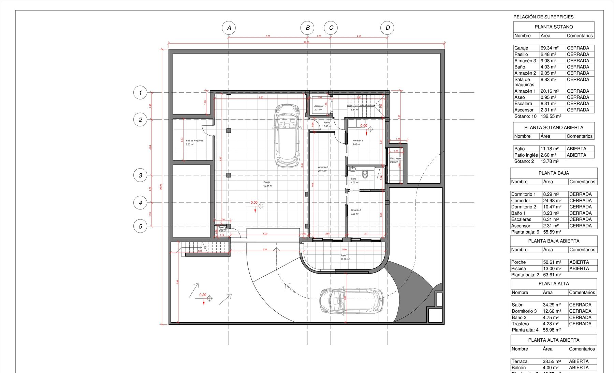
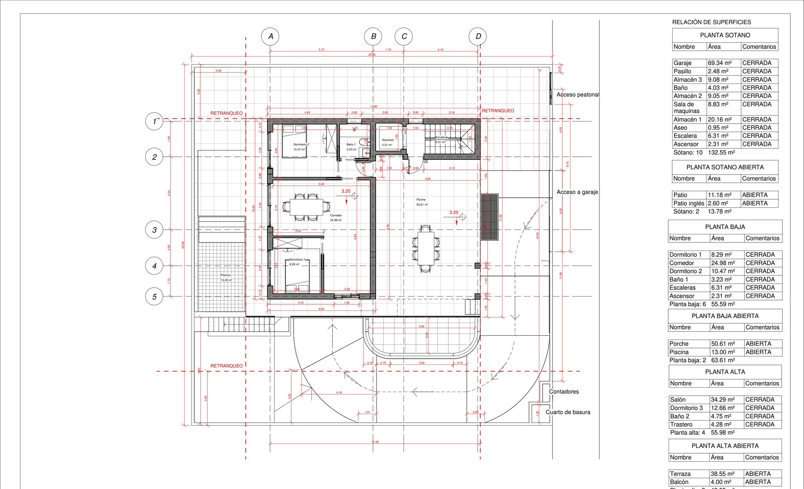
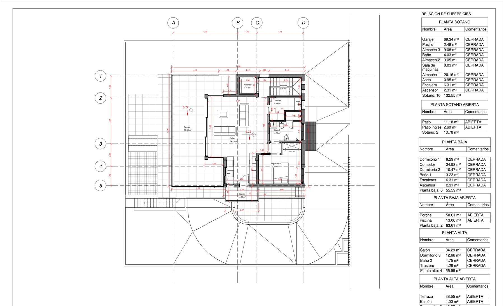
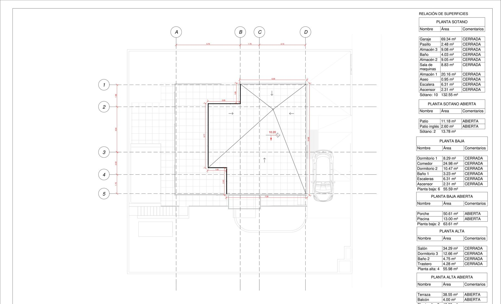
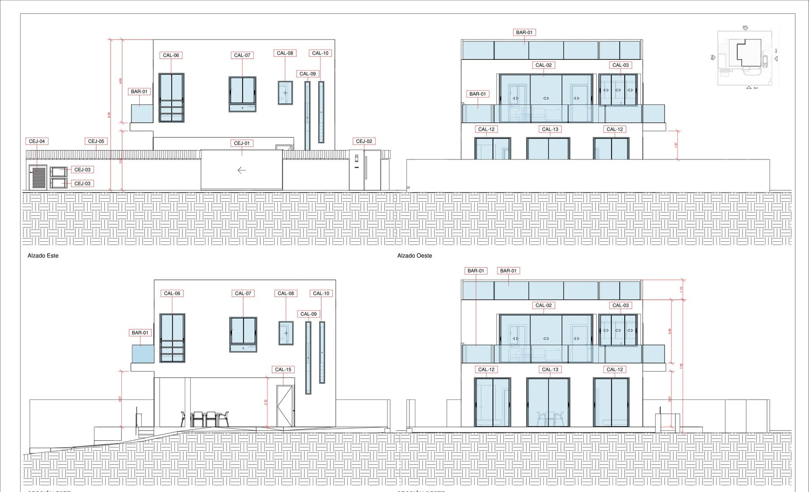
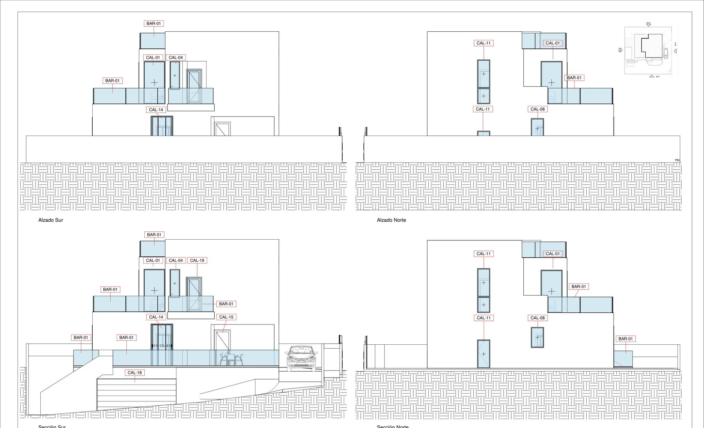
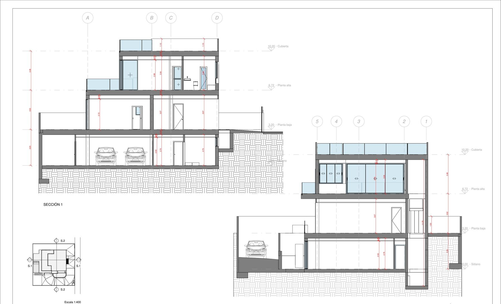

400 m² urban plot in Un Posto al Sole, Callao Salvaje. A detached three-bedroom villa with private pool, two-car garage and lift has been designed, visaed, and approved by the Adeje council. A buyer acquiring today can move straight to construction — the two-year design-and-permit cycle is already behind. 400 m² de suelo urbano en la urbanización Un Posto al Sole, Callao Salvaje. Una villa unifamiliar aislada de tres dormitorios con piscina privada, garaje para dos coches y ascensor ha sido diseñada, visada y aprobada por el Ayuntamiento de Adeje. El comprador puede pasar directamente a ejecución — los dos años de diseño y trámites ya están resueltos.
500.000 €








In South Tenerife, the bottleneck between a buyer and their villa is rarely the land — it is the two-year cycle of architectural design, municipal consultation, and urban licensing that sits between purchase and breaking ground. This proposition removes that cycle entirely.
The 400-square-metre urban plot sits within Un Posto al Sole, a residential micro-zone of Callao Salvaje on the western edge of Adeje municipality. The zoning — Suelo urbanizable sectorizado ordenado, Sector Playa SAU 1.8, Pieza S04 Residencial — permits a single detached dwelling with a maximum buildable footprint of 0.35 m²/m² across two storeys.
A full architectural project has already been drawn, visaed, and submitted. The Adeje council formally granted the urban licence on 15 May 2025 (Expediente 15068/2025, Junta de Gobierno Local). The approved scheme comprises a 289-square-metre villa spread across basement, ground and upper floor: three bedrooms, two bathrooms, a 35-square-metre living-dining space, a 50-square-metre private pool, a two-car garage, a private lift connecting all levels, and 50 square metres of terraces. Total construction budget (PEM) is approximately €228,000. The licence gives the buyer twelve months to begin works and forty-eight to complete them.
Callao Salvaje itself is one of the quieter residential enclaves on the Adeje coast — walking distance to Playa Ajabo and Playa del Ajabo, with direct access to the TF-1 motorway to Tenerife South Airport (twenty minutes). The micro-zone favours owner-occupied detached villas rather than resort inventory, a character supported by the town's planning policy and reflected in neighbouring contemporary builds.
Full project documentation, licence resolution, and cadastral reference are available for review under a standard confidentiality agreement.
En el sur de Tenerife, el cuello de botella entre un comprador y su villa rara vez es el suelo — son los dos años de redacción del proyecto, consultas al ayuntamiento y tramitación de licencia los que separan la compra de la primera piedra. Esta propuesta elimina ese ciclo por completo.
La parcela urbana de 400 m² se encuentra dentro de Un Posto al Sole, una micro-zona residencial de Callao Salvaje en el extremo occidental del término municipal de Adeje. La clasificación urbanística — Suelo urbanizable sectorizado ordenado, Sector Playa SAU 1.8, Pieza S04 Residencial — permite una vivienda unifamiliar aislada con edificabilidad máxima de 0,35 m²/m² en dos plantas.
El proyecto arquitectónico completo ya ha sido redactado, visado y presentado. El Ayuntamiento de Adeje concedió formalmente la licencia urbanística el 15 de mayo de 2025 (Expediente 15068/2025, Junta de Gobierno Local). La propuesta aprobada contempla una villa de 289 m² distribuidos entre sótano, planta baja y planta alta: tres dormitorios, dos baños, salón-comedor de 35 m², piscina privada de 50 m², garaje para dos coches, ascensor privado que comunica todas las plantas y 50 m² de terrazas. El presupuesto de ejecución material (PEM) se sitúa en torno a 228.000 €. La licencia otorga al comprador doce meses para iniciar las obras y cuarenta y ocho para finalizarlas.
Callao Salvaje es uno de los enclaves residenciales más tranquilos de la costa de Adeje — a pie de Playa Ajabo, con acceso directo a la TF-1 y al Aeropuerto Tenerife Sur a veinte minutos. La micro-zona prioriza viviendas unifamiliares de uso propio frente a inventario turístico, un carácter respaldado por la política urbanística municipal y reflejado en las construcciones contemporáneas colindantes.
La documentación completa del proyecto, la resolución de licencia y la referencia catastral están disponibles bajo un acuerdo de confidencialidad estándar.
Full project documentation and licence resolution available for review under NDA. Viewings of the plot by appointment with Stazio. Documentación completa del proyecto y resolución de licencia disponibles bajo acuerdo de confidencialidad. Visitas a la parcela con cita previa con Stazio.